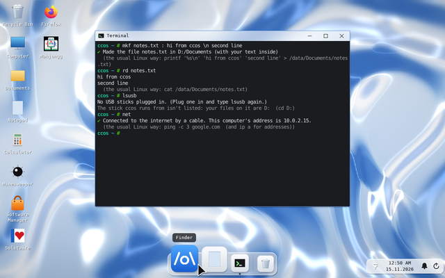

The desktop

The app list

The Terminal (with easy commands)

Booting up
CcOS is a sloppy operating system that could maybe even bring back your old devices to life.
[ What is it? | Screenshots | Features | tinyCcOS | FAQ | Docs ]
| NEW! tinyCcOS is in making! It will even be able to run on a potato. |
CcOS is a small hobby operating system built on top of the Linux kernel. It boots straight from a USB stick, has its own desktop (written from scratch), and keeps your files on the stick, so you can carry it from computer to computer.
It is not perfect. Some things are held together with tape. That's the fun part.
The desktop |
The app list |
 The Terminal (with easy commands) |
Booting up |
Want to know how to use it? Read the CcOS docs.
tinyCcOS is in making! It will even be able to run on a potato. More about it soon.
CcOS · made for fun · best viewed in any browser